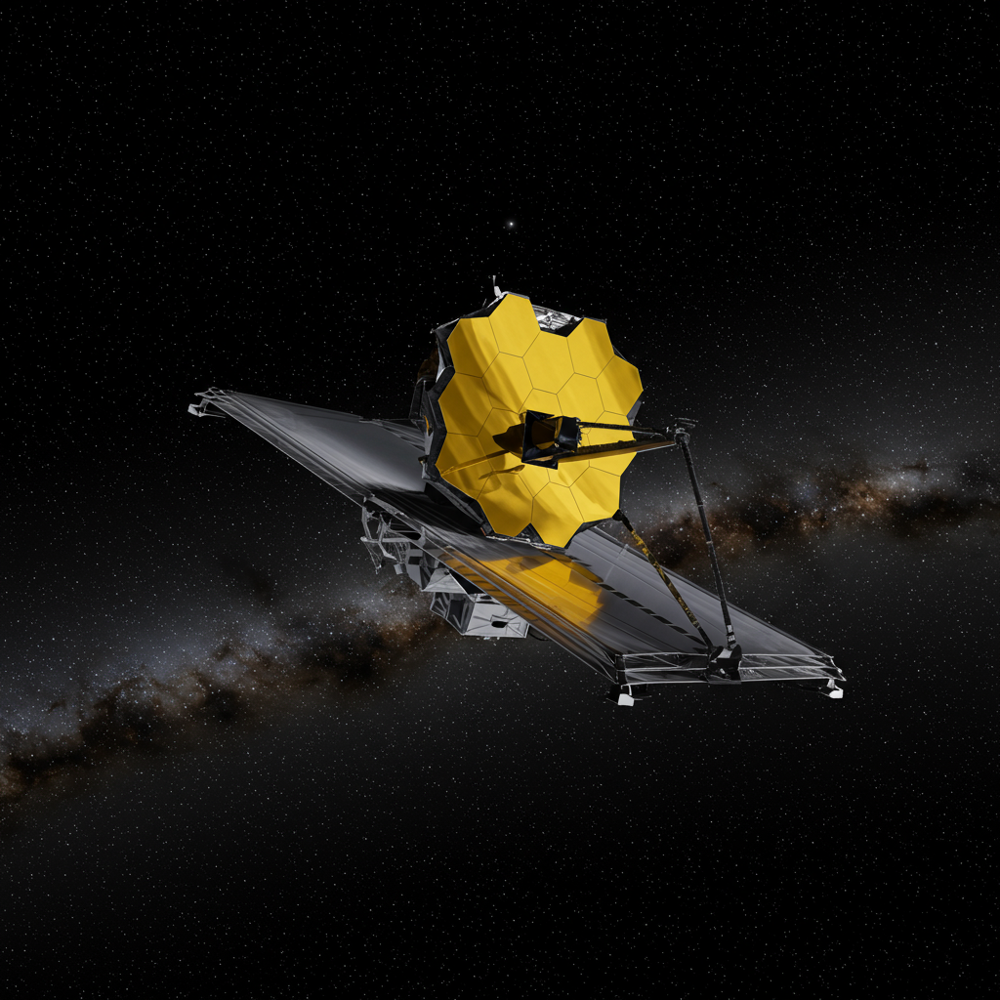

James Webb Space Telescope
Agencia: NASA / ESA / CSA
Fecha de lanzamiento: 25 de diciembre de 2021
Duración de misión: Planeada para mínimo 10 años (activo)
Tipo de misión: Telescopio espacial de infrarrojo cercano y medio
Objetivo: Estudiar la formación de estrellas y galaxias, caracterizar exoplanetas, explorar el universo temprano y su evolución
Carga científica: Espejo primario segmentado de 6.5 m, NIRCam, NIRSpec, MIRI, FGS/NIRISS
Significado del nombre
Nombrado en honor a James E. Webb, administrador de la NASA durante la carrera lunar, quien consolidó el programa Apolo y fortaleció la ciencia espacial. El telescopio honra su legado al ser la misión científica más ambiciosa de la agencia.
Impacto histórico
James Webb ha revolucionado la astronomía con imágenes infrarrojas de altísima resolución. Ha observado galaxias formadas apenas 300 millones de años después del Big Bang, estudiado discos protoplanetarios con detalles sin precedentes y analizado atmósferas de exoplanetas en busca de trazas químicas complejas.
Sus primeros resultados revelaron estructuras cósmicas jamás vistas, permitiendo redefinir modelos de formación galáctica y evolución estelar. Es especialmente valorado por su capacidad para detectar agua, dióxido de carbono, metano y otras moléculas en atmósferas de exoplanetas potencialmente habitables.
Hasta 2024, no ha confirmado señales de vida o "captaciones extraterrestres" directas, pero ha detectado firmas químicas sugerentes (como CO₂ y agua) en exoplanetas gigantes y supertierras. Webb sigue ampliando el censo de exoplanetas y midiendo sus climas, avanzando la búsqueda de habitabilidad en sistemas lejanos.
Estado actual
Activo y en óptimo estado. Opera desde el punto L2 de Lagrange, enviando datos a diario. Se espera que continúe funcionando al menos hasta 2030 gracias a su combustible excedente y excelente salud de sus instrumentos.